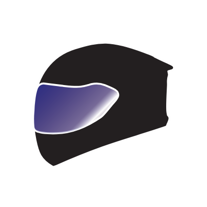

Adobe Illustrator
Eesmärk oli tutvuda Adobe Illustrator programmiga ja osata kasutada lihtsamaid tööriistu.
Personaalne logo
Ülesanne oli, kasutades kujundeid, pen ja curvature ning shape builderi tööriistu, kujundage oma individuaalne logo.

Visiitkaart
Ülesanne: Kasutades kujundeid ja oma eelnevalt tehtud logo, kavanda visiitkaart. Uue faili loomisel illustratoris, sea suuruseks 9x5cm ja kasuta kahte artboardi ning kõike eelnevat.
Polügoniseeritud objekt
Ülesanne: Otsi pilt, millel on mitu keskmise suurusega objekti, ning kasutades Pen tööriista, joonista oma valitud objekt üle kolmnurksete polügonidega.
 |
 |